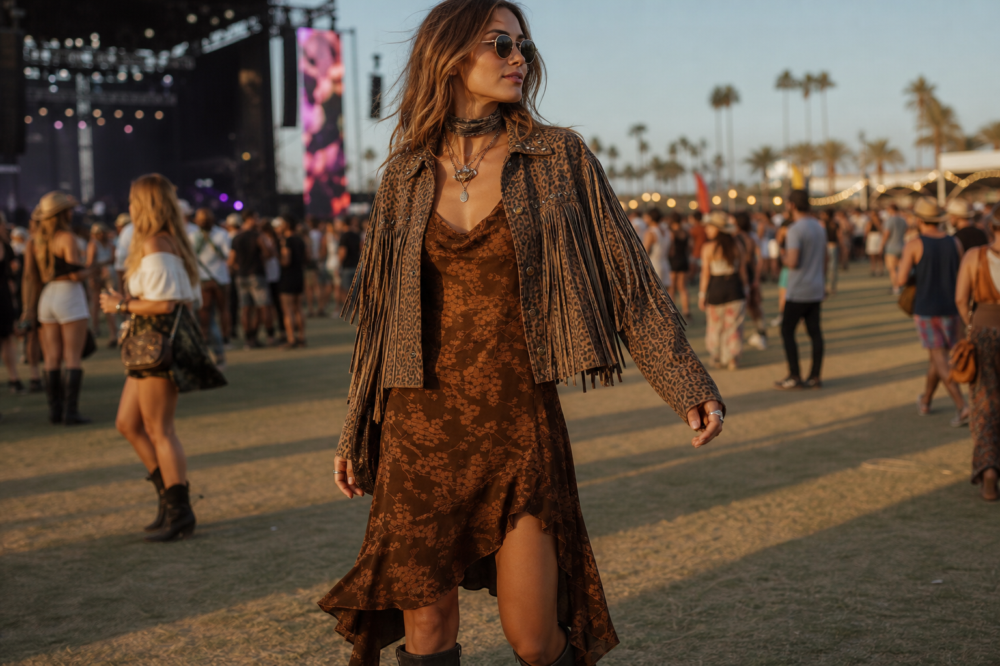
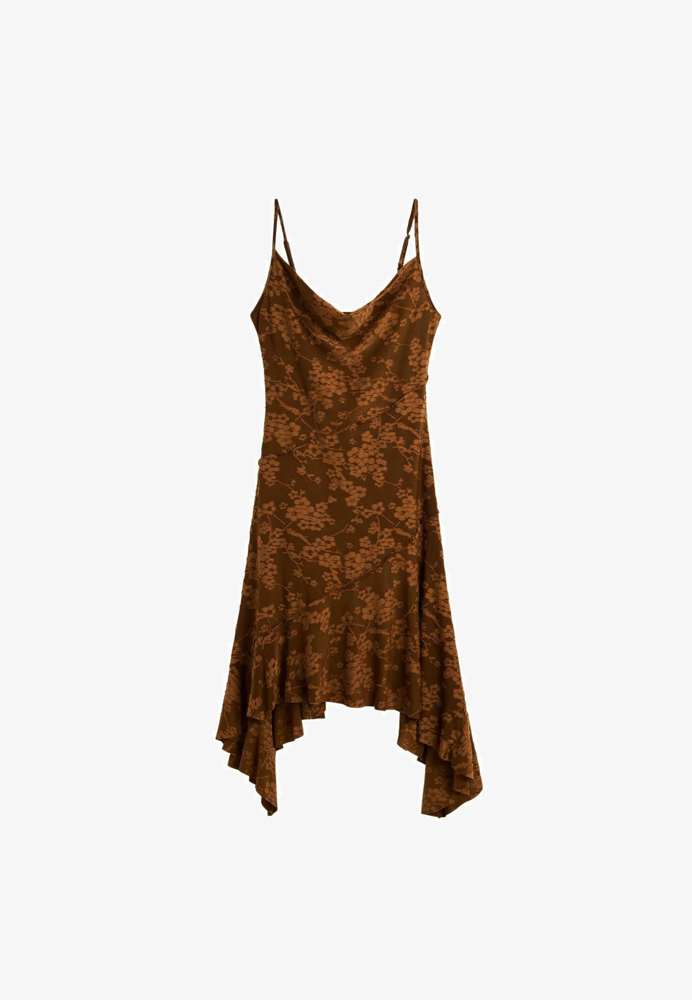
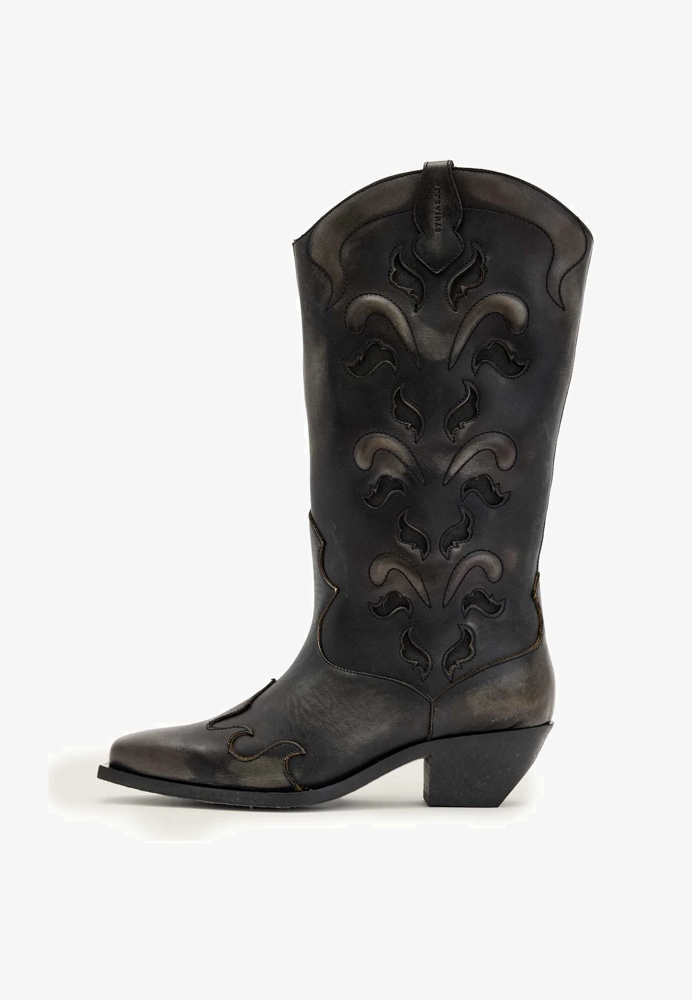
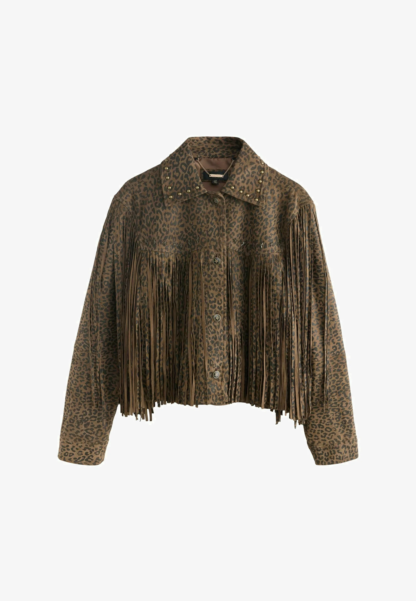
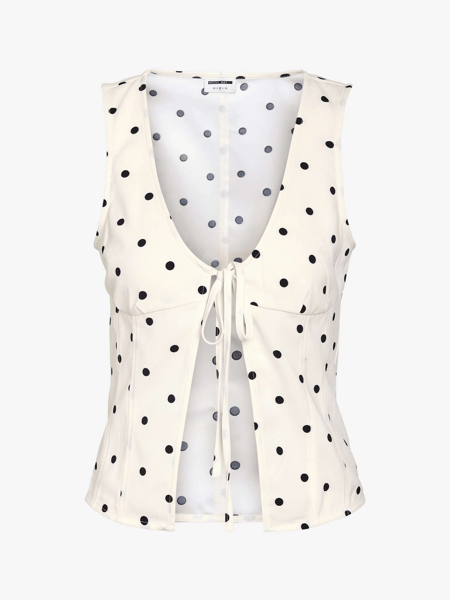
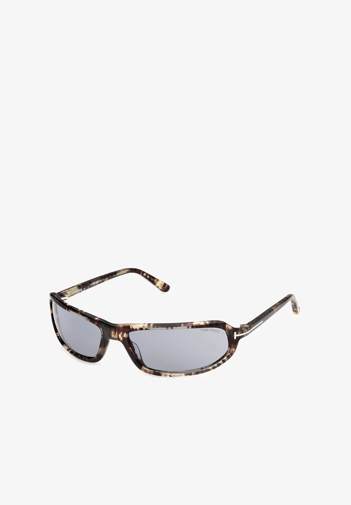

Festival style on Pinterest has officially moved on from flower crowns and fringe shorts. The 2026 boards are pinning something quieter and a little more grown-up — sun-faded slip dresses, real cowboy boots, leopard suede, polka-dot vests, and the kind of vintage sunglasses you keep forever. The trick this season is to look like you didn't try. Below, the five pieces our editors keep saving for Coachella, Glasto, Primavera, and every weekend that calls for sunscreen plus a dress code.

Why This Year Looks Different
Pinterest searches for "Coachella outfit" are up triple digits — but click through and the dominant aesthetic isn't bohemian anymore. It's "vintage western" meets "slip-dress quiet": brown tones instead of bright tie-dye, cowboy boots instead of cut-offs, fringe jackets that look like they came from a flea market in Marfa rather than a fast-fashion site.
The styling rule this season is "one statement piece, the rest is texture." A floral slip is the statement; the boots and jacket are the texture. A polka-dot tie-front vest is the statement; the sunglasses and necklaces are the texture. Pick one hero — let everything else stay out of its way.
The Edit

A cowl-neck slip in burnt umber with a tonal floral jacquard and a handkerchief hem that moves with every step — this is the festival dress the most-pinned boards keep coming back to. The brown reads vintage, the asymmetric hem reads expensive, and the cut is just sheer enough to feel a little dangerous without crossing any lines.
Wear with cowboy boots and a layered necklace stack for daytime; throw a leopard jacket on at sunset and you have an outfit that photographs in every direction.
Coachella Day Two Golden Hour
A real cowboy boot — distressed black leather, intricate cutout stitching, a stacked Cuban heel, and a pointed toe sharp enough to walk into any photograph. This is the festival shoe that won't date in two months. It works with the slip dress above, with denim shorts, with a slip skirt and a tee — basically anything you'd wear to a festival.
The slightly battered finish is the point. They photograph like they've already lived a life.
Coachella Glastonbury Country
The piece doing the heaviest lifting in this edit. A leopard-print suede western jacket with studs on the collar and long fringe down the sleeves — equal parts Stevie Nicks, equal parts Almost Famous. Throw it over a slip dress when the desert temperature drops, or wear it open over a polka-dot vest and shorts during the day.
The fringe is the point: it moves when you do, which is exactly what you want under a stage light.
Sunset Headliner Layering
The lighter, more playful piece in the edit. A vintage-style polka-dot vest with a tie-front and a low V — a little Brigitte Bardot, a little Coachella 2014, very 2026 right now. Wear it with high-waist denim shorts and a layered gold necklace stack for daytime, or knot it over a slip skirt at night.
The cream base flatters every tan, and the tie-front means you can adjust the crop to wherever feels right that day.
Day One Daytime Layering
Tiny wraparound sunglasses are back — and this is the pair worth the splurge. Tortoiseshell acetate, smoked lens, slim arms — the silhouette is somewhere between Y2K and old-Hollywood, and they read instantly cool whether you're in a slip dress or a tee and shorts.
The tortoise pattern softens the futuristic shape just enough to feel current rather than costume. Buy once, wear forever.
Daytime Outdoor InvestmentHow To Style It
Build the outfit around one of the five pieces above, not three. The slip dress with boots and a jacket is one full look. The polka-dot vest with denim shorts and sunglasses is another. Mixing all five at once is where festival style starts to look like a Halloween costume — and Pinterest's most-saved 2026 boards are very clear: this season the win is restraint.
Pick warm tones across the whole outfit (brown, cream, tobacco, leopard, faded black) and the look reads "vintage editorial" rather than "costume rental." That's the whole brief. Add SPF, a refillable water bottle, and walk on.
More Edits Like This
Pinterest trend reports, curated edits, and the products our editors are saving — all in one place.
Read the Blog